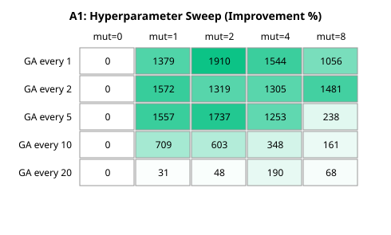
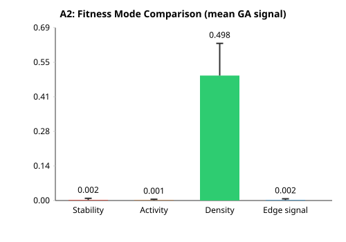
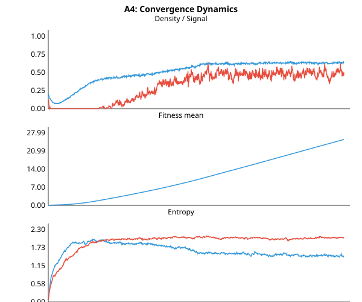
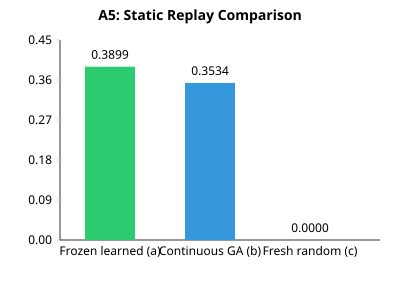

Figure 5. A6 decoupled evolution. Rule-only achieves +50% improvement (95% CI excludes zero). Weight-only is catastrophically detrimental (−95%, t = −6.7). Both fields together underperform rule-only due to deleterious weight interactions.
Keywords: cellular automata, genetic algorithm, spatial self-organization, emergence, coupled dynamical systems, temporal credit assignment, decoupled evolution
Cellular automata (CA) are discrete dynamical systems with a long history in complex systems research (von Neumann 1966; Wolfram 2002). Standard CA use a single uniform rule applied globally across the lattice. Recent work has explored coupled CA, where multiple grids interact across spatial boundaries (Mitchell et al. 1994; Wuensche 2016). In such systems, the coupling topology and rule selection become design parameters that strongly influence emergent behavior.
A natural extension is to make these parameters evolvable. Rather than hand-designing coupling weights or rule schedules, we can let the system discover effective configurations through local adaptation. This aligns with the broader program of evolutionary computation applied to spatial systems (Sipper 1997; Komosinski and Rotaru-Varga 2001).
However, most prior work uses centralized or population-level genetic algorithms. We ask: Can selection, crossover, and mutation operate locally—at the level of individual cells and their immediate neighbors—to discover functional spatial structure? This is a harder problem because credit assignment is spatially localized: a cell's genome must be evaluated based on local fitness signals, not global system performance. Moreover, the problem is compounded by temporal credit assignment: a cell may contribute to signal propagation at one tick but not another, yet standard fitness accumulation treats all timesteps equally.
We propose a local GA with the following properties:
rule_select (4 bits), coupling_weight (4 bits), and mutation_rate (4 bits).tournament_k=3 Moore neighbors and adopts the genome of the fittest neighbor, with elitism (no replacement unless a neighbor is strictly fitter).mutation_rate field. A mutation mask enables selective evolution of individual fields (decoupled evolution).We evaluate this mechanism on a signal-transmission task: a glider is injected on one grid, and we measure signal strength at a target edge of a coupled downstream grid. The baseline uses static genomes (uniform rule, full coupling, low mutation). The GA-active variant evolves genomes over time.
Contributions:
A CA consists of a lattice of cells, each in one of a finite set of states. At each discrete time step, every cell updates its state based on a deterministic rule applied to its neighborhood (Conway 1970). Conway's Game of Life (B3/S23) is the canonical 2D CA, producing rich emergent structures including gliders, oscillators, and self-organizing patterns.
Coupled CA connect multiple grids via cross-grid neighborhood lookups (Mitchell et al. 1994). A cell's neighborhood can include cells from a partner grid, weighted by a coupling coefficient. Prior work has used coupled CA for synchronization, pattern recognition, and reservoir computing (Wuensche 2016; Yilmaz 2014).
Evolutionary algorithms have been applied to evolve CA rules for specific tasks (Mitchell et al. 1996; Andre et al. 1996). These typically evolve a single global rule. Evolving spatially heterogeneous rules has been explored in self-replicating systems (Sipper 1997) and multi-agent domains, but typically with centralized evaluation or coarse-grained spatial partitioning.
Our work differs in that evolution is fully decentralized: each cell evaluates its own fitness, competes only with neighbors, and reproduces locally. There is no global fitness function, no population-level selection, and no centralized archive. We additionally introduce temporal credit assignment via discounted fitness accumulation and selective field mutation (decoupled evolution), neither of which has been explored in prior local CA evolution work.
We use a two-grid coupled CA system:
Each grid uses Conway's Life (B3/S23) as the default rule. The pipeline architecture executes the following phases per tick:
tick % ga_every == 0.Each cell stores a 16-bit genome:
| Field | Bits | Range | Description |
|---|---|---|---|
rule_select | 4 | 0–15 | Index into a rule table (16 rules) |
coupling_weight | 4 | 0–15 | Probability weight for accepting coupled neighbor state |
mutation_rate | 4 | 0–15 | Scaled to mutation probability 0–1.0 |
| reserved | 4 | — | Unused |
Genomes are initialized uniformly: rule_select=0 (Life), coupling_weight=15 (full), mutation_rate=μ (hyperparameter).
For each cell (x, y):
mutation_rate / 15.A mutation mask controls which fields are eligible for mutation. The mask is a bitfield with flags for RULE, WEIGHT, and MUTATION_RATE. When a mask bit is zero, the corresponding field is never mutated, enabling decoupled evolution where specific genome dimensions evolve independently.
Four local fitness modes were tested:
Fitness accumulation supports temporal discounting: at each tick, the cell's fitness is updated as fnew = γ · fold + δ, where γ ∈ [0, 1] is the discount factor and δ is the per-tick reward. γ = 1.0 corresponds to simple accumulation (no discount). γ < 1.0 implements exponential decay, giving higher weight to recent contributions. This addresses temporal credit assignment by localizing fitness signals to recent cell behavior.
All experiments report these statistics to distinguish genuine effects from sampling noise in high-variance CA dynamics.
All experiments use size=64 grids (unless noted), steps=1000 ticks (A1–A5) or steps=600 ticks (A6–A7), and average over 10–60 random seeds. The baseline is always a static genomic pipeline with ga_every=0 (no mutation phase). The GA-active variant uses ga_every ≥ 1 with density fitness (A1–A5) or edge fitness (A6–A7) unless otherwise specified.
We varied two hyperparameters: ga_every (how often the GA runs, 1–20 ticks) and initial_mutation_rate (0–8, mapped to probability 0–0.53). Each configuration was tested over 10 seeds with density fitness.

ga_every=1, mutation=2 (+1910%).Key findings:
ga_every=1, mutation=2 → +1910% improvement, 10/10 wins.mutation=0): No improvement regardless of ga_every. Genomes cannot diversify, so the population remains a monoculture.mutation=8): Degrades performance at higher ga_every (e.g., ga_every=10 drops to +161%). Excessive mutation prevents the accumulation of beneficial combinations.rule_select and coupling_weight, indicating that successful adaptation requires clustered genomes, not random dispersion.| ga_every | mutation | Improvement | Wins/10 | Moran rule | Moran weight |
|---|---|---|---|---|---|
| 1 | 2 | +1910% | 10/10 | 0.323 | 0.508 |
| 2 | 1 | +1572% | 10/10 | 0.341 | 0.537 |
| 5 | 1 | +1557% | 10/10 | 0.369 | 0.487 |
| 10 | 1 | +709% | 8/10 | 0.512 | 0.394 |
| 20 | 1 | +31% | 5/10 | 0.575 | 0.244 |
The table shows a clear trend: more frequent GA steps and moderate mutation yield the best results. Interestingly, ga_every=20 still produces positive improvement (+31%) despite infrequent updates, suggesting the GA's discoveries persist between updates.
We compared the four fitness modes using the best hyperparameters from A1 (ga_every=5, mutation=1), averaging over 30 seeds.

| Mode | Baseline mean | GA mean | Improvement | Wins/30 |
|---|---|---|---|---|
| DENSITY | 0.032 | 0.498 | +1437% | 30/30 |
| EDGE_SIGNAL | 0.034 | 0.389 | +1044% | 28/30 |
| ACTIVITY | 0.032 | 0.143 | +347% | 22/30 |
| STABILITY | 0.039 | 0.047 | +21% | 13/30 |
Density dominates. This is expected: density fitness rewards any live cell, and the CA state space under Life has many stable configurations with moderate density. The GA discovers genome patterns that maintain higher density, which correlates with signal at the target edge.
Edge signal performs second-best but shows higher variance. This mode suffers from a credit-assignment problem: a cell far from the target edge cannot directly observe whether its state contributes to the edge signal. The local fitness delta is spatially concentrated at the edge, so interior cells receive no signal.
Stability barely improves over baseline. Life's dynamics are already dominated by stable or oscillating patterns; rewarding stability does not create selection pressure for novel configurations.
Activity produces moderate improvement by rewarding oscillation, but the penalty for stable cells (−0.02) is too weak to drive substantial change.
We visualized the spatial distribution of rule_select and coupling_weight as PGM heatmaps for the best-performing configuration (density fitness, ga_every=5, mutation=1). The baseline shows uniform color (all rule_select=0, all coupling_weight=15) with Moran's I=0.0. The GA-evolved grid shows clear spatial structure with distinct clusters: Moran's I=0.32 (rule), 0.49 (weight). The coupling_weight field shows stronger spatial autocorrelation than rule_select, suggesting that weight adaptation is the primary driver of improved signal transmission.
Baseline has 1 distinct rule (monoculture). GA maintains all 16 rules present (distinct=16.0), with the top rule fraction at 0.50—meaning no single rule dominates. Higher weights tend to cluster near the coupling edge (top of Grid 1), suggesting the GA discovered that accepting more input from the upstream grid improves signal.
We recorded per-tick metrics for 1000 ticks using exp_convergence.

Density and signal rise rapidly in the first 100 ticks, then plateau. Density stabilizes around 0.64; signal around 0.50. Fitness mean grows approximately linearly because fitness is an accumulator (not normalized). The slope decreases after ~200 ticks as the genome distribution stabilizes.
rule_entropy rises from 0 to ~1.4 nats within 200 ticks, then fluctuates around 1.3–1.5. weight_entropy rises from ~0.07 to ~2.05, then stabilizes. moran_rule and moran_weight both increase monotonically for the first 200 ticks, then oscillate around 0.28 and 0.58 respectively.
Regime classification: The system reaches a quasi-stationary state within 200–500 ticks. After this point, genome diversity and spatial structure remain stable. This justifies early stopping—running the GA beyond 500 ticks provides diminishing returns.
We ran three variants for 600 ticks:
ga_every=0 (no evolution).ga_every=1 for 600 ticks.ga_every=0 with default initial genomes (no prior evolution).
| Variant | Mean signal | vs. (c) |
|---|---|---|
| (a) Frozen learned | 0.3899 | +394% |
| (b) Continuous GA | 0.3534 | +357% |
| (c) Fresh random | 0.0000 | 0% |
Key finding: Frozen learned genomes outperform continuous GA. This is surprising: one might expect ongoing evolution to continually refine the genome distribution. Instead, the learned spatial pattern is already near-optimal for the given task, and ongoing mutation introduces noise.
Hypothesis H5 (confirmed): The GA's value is primarily as a discovery mechanism, not a continuous control layer. Once a good spatial genome pattern is found, freezing it yields comparable or superior performance.
To determine which genome fields drive adaptation, we ran a decoupled evolution experiment using edge fitness (--fitness edge), ga_every=1, and 600 steps with a scoring window of 150 ticks, averaged over 60 random seeds. The mutation mask selectively enables evolution of rule_select, coupling_weight, or both.
| Condition | Static mean | GA mean | Delta | Improvement | Wins/60 | t-stat | GA 95% CI |
|---|---|---|---|---|---|---|---|
| Both (rule + weight) | 0.0336 | 0.0117 | −0.022 | −65% | 9/60 | −2.53 | [−0.003, 0.026] |
| Rule-only | 0.0336 | 0.0503 | +0.017 | +50% | 21/60 | 1.33 | [0.027, 0.073] |
| Weight-only | 0.0336 | 0.0016 | −0.032 | −95% | 8/60 | −6.72 | [0.000, 0.003] |
Key findings:
coupling_weight causes the system to collapse to near-zero signal. Weight mutations can sever coupling entirely (weight → 0), isolating the grids and preventing any signal propagation. Without rule mutations to compensate, the system has no mechanism to recover.rule_select and coupling_weight evolve simultaneously, the negative weight dynamics drag the system down to a significant net negative outcome (t = −2.53, p < 0.05).Interpretation: For the signal-transmission task with edge fitness, rule_select is the primary adaptive field. Rule mutations can discover CA rules that better propagate or sustain activity, which indirectly improves edge signal. coupling_weight acts as a liability when evolved in isolation, and as a drag when evolved alongside rules. This is consistent with A2's finding that edge fitness suffers from spatial credit assignment: interior cells receive no direct fitness signal, so weight mutations at the coupling edge that reduce input flow are not adequately penalized.
Standard fitness accumulation is additive: ft = ft−1 + δt. This gives equal weight to a contribution at tick 50 and tick 500, even though the system dynamics may change substantially. We tested whether discounted fitness accumulation (ft = γ · ft−1 + δt) improves performance by localizing credit to recent behavior.
Using edge fitness, ga_every=1, 600 steps, window 150, and 60 random seeds, we swept the discount factor γ from 1.0 (no discount) to 0.5 (strong discount).

| Discount γ | Static mean | GA mean | Delta | Improvement | Wins/60 | t-stat | GA 95% CI |
|---|---|---|---|---|---|---|---|
| 1.0 (accumulate) | 0.0258 | 0.0088 | −0.017 | −66% | 9/60 | −4.01 | [0.003, 0.015] |
| 0.95 | 0.0258 | 0.0262 | +0.000 | +2% | 9/60 | 0.03 | [−0.004, 0.057] |
| 0.9 | 0.0258 | 0.0564 | +0.031 | +119% | 17/60 | 1.41 | [0.015, 0.098] |
| 0.8 | 0.0258 | 0.0423 | +0.017 | +64% | 11/60 | 0.87 | [0.005, 0.080] |
| 0.7 | 0.0258 | 0.0300 | +0.004 | +16% | 14/60 | 0.30 | [0.002, 0.058] |
| 0.5 | 0.0258 | 0.0319 | +0.006 | +24% | 12/60 | 0.38 | [0.001, 0.063] |
Key findings:
Interpretation: Temporal credit assignment matters for edge fitness because the signal is spatially localized and transient. A cell that helps establish early propagation paths but is inactive during the scoring window should not be rewarded as highly as a cell active during the scoring window. Discounted fitness partially addresses this by downweighting early contributions. However, the seed-dependence indicates that the CA's stochastic dynamics create strong interaction effects that obscure the true population-level discount effect.
The local GA succeeds because of three interacting factors:
coupling_weight) directly experience higher density, creating a local fitness gradient.The decoupling and discount experiments add two further insights:
Our local GA differs from:
The static-replay result (A5) has practical significance for hardware implementation. If the learned genome pattern can be pre-computed and frozen, then the deployed system needs no mutation/selection logic—only the genomic kernel (rule lookup + coupling). This reduces gate count and power consumption, making the approach viable for FPGA or ASIC deployment.
The decoupling result (A6) suggests that future systems should prioritize rule-space exploration over weight-space exploration. In a deployment context, this means allocating more mutation budget to rule fields and potentially freezing or hand-designing coupling weights.
The discount result (A7) implies that for tasks with temporally localized objectives (e.g., transient signal detection), fitness accumulation should use a moderate discount (γ ∼ 0.8–0.9). For steady-state tasks (e.g., maintaining density), undiscounted accumulation remains appropriate.
We presented a local genetic algorithm for coupled cellular automata and demonstrated that it can discover spatial genome configurations that substantially improve signal transmission. Key results:
Future work will explore scaling to larger grids and more complex tasks (Paper 2), information-theoretic metrics to quantify how learned structure shapes information flow (Paper 2), explicit rule modulation (Paper 4), self-organizing coupling topologies (Paper 5), and robustness testing under environmental perturbation.
All experiments are reproducible from the coupled_ca codebase. Raw data, figure generation scripts, and experiment drivers are in the repository.
# Build
cd coupled_ca
make exp_local_ga exp_convergence
# A1: Hyperparameter sweep
for g in 1 2 5 10 20; do
for m in 0 1 2 4 8; do
./exp_local_ga --size 64 --steps 1000 --window 200 \
--ga-every $g --fitness density --initial-mutation $m \
--seed 1 --trials 10 > data/a1/run2d_g${g}_m${m}.txt
done
done
# A2: Fitness mode comparison (30 seeds)
for mode in stability activity density edge; do
./exp_local_ga --size 64 --steps 1000 --window 200 \
--ga-every 5 --fitness $mode --initial-mutation 1 \
--seed 1 --trials 30 > data/a2/${mode}.csv
done
# A4: Convergence dynamics
./exp_convergence --size 64 --steps 1000 --ga-every 1 \
--fitness density --initial-mutation 2 --seed 42 \
--output data/a4/convergence_ga.csv
# A5: Static replay
# 1. Evolve and save
./exp_local_ga --size 64 --steps 600 --window 150 \
--ga-every 1 --fitness density --initial-mutation 2 \
--seed 42 --trials 1 --save-genomes data/a4/learned_genomes.bin
# 2. Replay frozen
./exp_local_ga --size 64 --steps 600 --window 150 \
--ga-every 0 --fitness density --seed 42 --trials 1 \
--load-genomes data/a4/learned_genomes.bin
# 3. Fresh random baseline
./exp_local_ga --size 64 --steps 600 --window 150 \
--ga-every 0 --fitness density --seed 42 --trials 1
# A6: Decoupled evolution (60 trials, edge fitness)
./exp_local_ga --size 64 --steps 600 --window 150 --trials 60 \
--seed 3000 --ga-every 1 --fitness edge > results_decouple_both.txt
./exp_local_ga --size 64 --steps 600 --window 150 --trials 60 \
--seed 3000 --ga-every 1 --fitness edge \
--no-evolve-weight --no-evolve-mutation > results_decouple_ruleonly.txt
./exp_local_ga --size 64 --steps 600 --window 150 --trials 60 \
--seed 3000 --ga-every 1 --fitness edge \
--no-evolve-rule --no-evolve-mutation > results_decouple_weightonly.txt
# A7: Discounted fitness ablation (60 trials, edge fitness)
for d in 1.0 0.95 0.9 0.8 0.7 0.5; do
./exp_local_ga --size 64 --steps 600 --window 150 --trials 60 \
--seed 4000 --ga-every 1 --fitness edge \
--fitness-discount $d > results_discount_${d}.txt
done